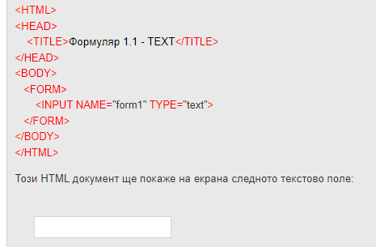

Освен за показване на информация WEB страниците могат да служат и за събиране на информация от потребителя. Това става с така наречените формуляри. Езикът HTML не позволява да управлявате информацията във формулярите, а само да ги разполагате на страницата. Двойката елементи за разполагане на формуляри е <form> </form> . Между тази двойка елементи могат да се разполагат неограничен брой елементи на формуляр. Всеки един елемент във формуляра се разполага с единичния таг <input> . Този елемент трябва задължително да съдържа двата атрибута NAME и TYPE. Атрибута NAME задава името на елемента, а TYPE видът му. Нека разгледаме различните стойност на TYPE. С параметърът ACTION се задава скрипта, който се изълнява при потвърждаване на формуляра, а с METHOD, се задава как да бъдат предадени данните към сървъра. Стойностите на METHOD са GET (стойностите на полетата се предават чрез URL адреса) и POST (използва се когато предаваме лична инфорамция, която не желаем да се вижда в URL адреса).
Пример 1:
<form name="contact" action="contact_page.php" method="post">
Пример 2:
Видове input тагове
Когато използваме тага <input>, ние имаме възможност да зададем вида информация, който ще попълнем в него, като по този начин правилата за попълване ще бъдат различни.
<input type="text" > - При този вид input се дава възможност за попълване на текст, без никаква дискретност или филтриране
<input type="password" > - Този вид input замаскира информацията която ще се пише във формуляра, като парола.
<input type="email" > - Този вид input приема само електронни пощи при изпращане на формуляр. При този вид формуляр трябва да съдържа '@' и поне една '.' , като разделител.
<input type="file" > - Този вид input приема само файлове и видеа. Например ако нашият сайт предлага качване на снимка или видео, то ние трябва да използваме този формуляр.
<input type="radio" > - Този вид input преобразува нормалното поле за вкарване на информация в кръгово поле, което може да бъде натиснато при желаене на някаква опция.
<input type="number" > - Този вид input приема само числени стойности.
Допълнителни настройки на input тагове
<input required > - По този начин задължаваме попълването на този input и в случай, че след запращането на формуляра той е празен, то формуляра няма да бъде изпратен и браузъра ще даде информация че полето е задължително
<input ,max="число" > - Използва се когато вида формуляр ще приема числени стойности. 'max' полето задава максималната числена стойност която може да бъде приета без браузъра да я отхвърли
<input ,min="число" > - Използва се когато вида формуляр ще приема числени стойности. 'min' полето задава минималната числена стойност която може да бъде приета без браузъра да я отхвърли
<input ,minlength="число" > - Използва се когато вида формуляр ще приема текст. 'minlength' полето задава минималния брой символи, който браузъра ще приеме без да отхвърля запращането на формуляра
<input ,maxlength="число" > - Използва се когато вида формуляр ще приема текст. 'maxlength' полето задава максималния брой символи, който браузъра ще приеме без да отхвърля запращането на формуляра